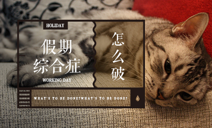

<!doctype html>
<html lang="en">
<head>
	<meta charset="UTF-8">
	<!--让IE以最新的内核渲染 -->
	<meta http-equiv="X-UA-Compatible" content="IE=edge,chrome=1"/>
	<!--让视口宽度为设备宽度,不允许用户缩放 -->
	<meta name="viewport" content="width=device-width,initial-scale=1.0,maximum-scale=1.0,user-scalable=no" />
	<!--不自动识别电话号码和邮编 -->
	<meta name="format-detection" content="telephone=no"/>
	<meta name="format-detection" content="email=no"/>
	<title>活动树</title>
	<link rel="stylesheet" href="css/style.css">
	<link rel="stylesheet" href="css/index.css">
	<link rel="stylesheet" href="css/font-awesome.min.css">
	<style>
		.footer a:nth-of-type(1) i{background:url(../img/home.jpg);background-size: 100% 100%;}
		.footer a:nth-of-type(1) {color: #61C167;}
		.footer a:nth-of-type(2) i{background:url(../img/faxian.jpg);background-size: 100% 100%;}
		.footer a:nth-of-type(3) i{background:url(../img/wode.jpg);background-size: 100% 100%;}
		#tip{
			background:blue;
			background:red\9;
			*background:black;
			_background:pink;
		}
	</style>
</head>
<body>
	<div class="container">
		<header class="header">
			<div class="input_box">
				<span></span>
				<input type="text" placeholder="输入关键字" class="input">
			</div>
		</header>

		<main class="main" id="main">
			<div class="iscroller">
				<!-- <section>
					<div class="con_top">
						
					</div>
					<div class="con_bot">
						<h1>上海漫控潮流博览会SHCC</h1>
						<h2>万圣节之后的一个周末，骨灰级漫迷福利来啦！</h2>
						<p>
							<small>上海市普陀区跨国采购会议中心</small>
							<small>11月05日开始</small>
						</p>
					</div>
				</section> -->
			</div>
		</main>

		<footer class="footer">
			<nav>
				<a href="index.html">
					<i></i>
					<span>首页</span>
				</a>
				<a href="faxian.html">
					<i></i>
					<span>发现</span>
				</a>
				<a href="wode.html">
					<i></i>
					<span>我的</span>
				</a>
			</nav>
		</footer>
	</div>
<script src="js/iscroll4.js"></script>
<script src="js/zepto.min.js"></script>
<script src="js/script.js"></script>
<script src="js/index.js"></script>
</body>
</html>